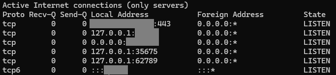

Следую мануалу
Поднял X-ray + vless + reality
Пытаюсь подключиться с компа через NekoBox
Сообщение при подключении:
Try to start the config, but the core has not listened to the grpc port, so restart it…
При TCP ping:
[Error] gRPC: QNetworkReply::NetworkError code: -1919
По ошибке ничего не гуглится
Встречается про отключение VPN, но выключая галочки во вкладке “Настройки TUN режима” на проблему подключения не влияет
Подскажите, в какую сторону копать …
провер твой core на месте?
Правильно понимаю, что core в данном случае это Xray?
В панели у него статус Running
Перезапускать его пробовал
Там же в панеле ранее переключал версию Xray с v24.12.18 на v24.12.31
Это повлияло на то, что логах панели ушло сообщение:
ERROR - X-UI: Failure in running xray-core:exit status 23
Но сообщение при подключении nekobox осталось таким же
В данном случае gRPC порт - это 443 порт или вот этот “listen” 62789 ?
{kind=link}
Сейчас попробовал менять со стандартного 62789 на 443,
появлялся 127.0.0.1:443
но на подключение не повлияло
Текущий netstat -tuln

core в данном случае на твоем клиенте, может ты папку не правильную указал
В какую сторону копать? Попрбуй сделат ь все с нуля, с иного мануала. Попробуй голый xray/singbox. А вообще читай маны
тут будто бы сам singbox/xray ловит какой-то баг-краш
gui не может с ним “договориться”, grpc упомянутый не с vps, а с ядра на компьютере
плюсую за перекачать другую версию nekobox или чисто ядро без gui
Всё так, дело оказалось в версии.
Изначально пробовал последнюю 4.0.1. В этой версии при первом запуске не предлагается выбор между xray/sing-box. Как иначе выбрать ядро бегло не нашёл.
Скачал версию 3.26 - с ней подключение сработало.
А теперь нет выбора - теперь только sing-box.
Ядро xray удалили из nekobox.
Все как я и писал, дело в core
Приветсвую. А подскажите пожалуйста, зачем они это сделали? Получается, версия 4.0.1 хуже по функциональности чем версия 3.26 ?
Неизвестно. Могу предположить, что так легче вести разработку приложения - грубо говоря, под два ядра писать в два раза больше кода. Но чем хуже то функционал? Я пробовала оба ядра и не заметила практически никакой разницы. Сейчас сижу на новой версии NekoRay и все отлично работает.
Благодарю за ответ